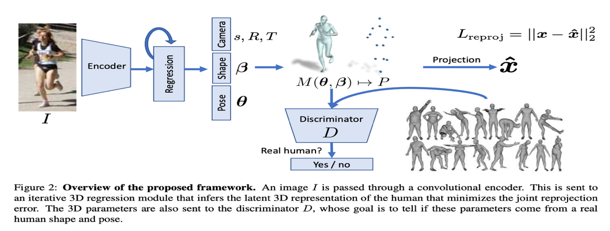
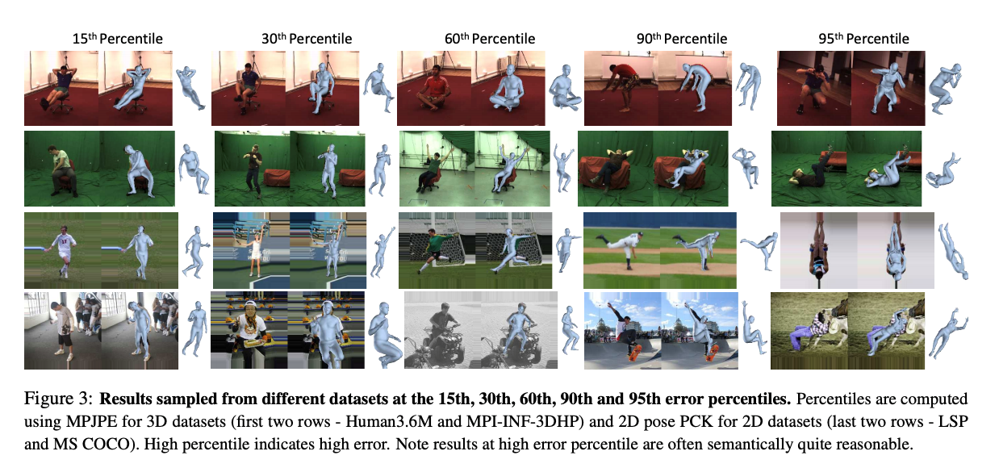

Body Modelling
Human Mesh Recovery (HMR) is a framework which is utilised to reconstruct
a full 3D mesh of a human from a single 2D RGB image. To do this, a
generative human body model, SMPL (Skinned Multi-Person Linear Model), is used. The following figure gives
a brief overview of the framework: an image is input to a convolutional encoder and there is then an iterative process that aims to minimise joint projection error.

Estimating a 3D mesh gives rise to many different applications such as
foreground and background detection in an image. This cannot be done
using a simple model.
Moreover, the output mesh from the framework is holistic, hence we
always get the full 3D model of the body. This model can be easily used
by “animators, modified, measured, manipulated and retargeted”[1].
3D analysis of humans from a single image has been researched for a very
long time. The majority of research has focused on recovering joint
locations e.g. elbow, kneecap etc. However, a human body is not simply
defined using joints; it is a surface in 3D space. The main objective of
this new approach with estimating a 3D mesh is to minimize reprojection
loss of key-points – this allows the model to be trained using 2D images.
This has huge implications in medical research, retracing historical
buildings, cancer research etc.
Existing methods to recover 3D human mesh consists of a multi-stage
approach. Initially, 2D joint locations are estimated, from which the
3D model parameters are predicted. However, this is not optimal; an
end-to-end solution in which there is a direct mapping from image
pixels to the model parameters is a much better solution.
The following figures show results from different mesh models.
They also exhibit different error percentiles. The key finding from the figures is that 3D reconstructions are possible without direct 3D supervision and the results are very close to that of the supervised model. One can only imagine the power of this technology when it is fully harnessed.
